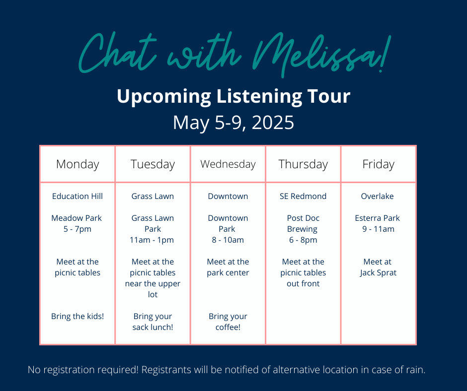

Listening Tour Recap
"Filing week" is the one and only chance for candidates to put their name on the ballot for upcoming
elections. During the May 5-9, 2025 filing week, Melissa celebrated with a five-stop listening tour
through the city.
Here are the top three messages Melissa heard on the tour:
Stability and affordability both matter: Locking in an affordable lease today is no guarantee that a
family can stay in their home or even their same school zone next year.
Love for our parks: Downtown park is the hub of civic life. Neighbors shared that having a park in
walking distance is one of the biggest reasons to live in Redmond.
Feedback on city services: Several residents shared feedback about city service levels. It's important
feedback for me to hear--and it produced an opportunity to take immediate action. I was able to connect
a resident to an advisory committee created by and built for city leaders to hear this direct feedback.
Want to chat with Councilmember Stuart?
Drop the campaign an email
or visit her office hours: 3 - 5 p.m. on the 2nd and 4th Thursdays at the Redmond Library. No office
hours on June 26, 2025.